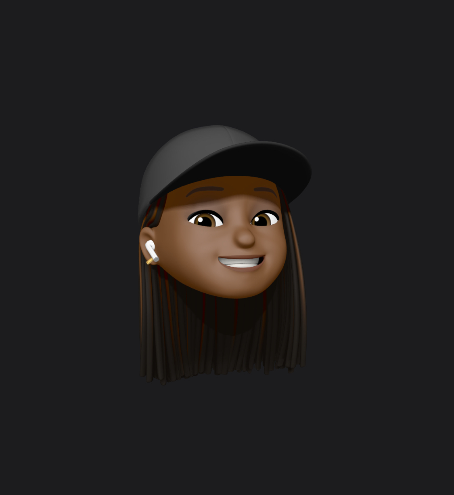

THERESA ABEGUNDE
Phone Number
Email Address
LinkedIn
Portfolio
Summary
Highly accomplished Product Designer with 2+ years of experience and a proven track record of leading successful design development and launches for both B2B and B2C products. Experienced in collaborating with engineering teams to implement product enhancements and skilled at managing multiple projects with tight deadlines to deliver high-quality results.
Education
- University of Roehampton, MSc Computing - Sept 2022 to Sept 2023
- University of Lagos, BSc Electrical and Electronics Engineering - Jan 2016 to Dec 2021
Skills
- Information Architecture
- User Research
- Miro
- Framer
- Whimsical
- HTML/CSS
- ReactJS
Experience
Product Designer - Akaani
Apr 2022 - Date
- Successfully designed and launched one B2B and two B2C products in a product team.
- Partnered with engineering to enhance the product, boosting customer retention by 56% and sales by 40%.
- Proficiently handled multiple high-pressure projects, consistently delivering top-quality results, with the potential to increase sign-ups by 80%.
- Independently researched and designed four applications, serving both Nigerian and US markets, with three currently in operation and the fourth in beta.
Fundraising Intern - Coach Core Foundation
Feb 2023 - Mar 2023
- Assumed responsibility for ensuring accurate financial records and managing Gift Aid information.
- Enhanced donor relationships and team productivity by maintaining and updating the Salesforce fundraising database with accurate donor information.
- Collaboratively worked with teammates to plan the Coach Core’s Sports Day fundraising event
UX/UI Designer - Wura Technologies
Nov 2021 - Mar 2022
- Redesigned key pages to optimize user interactions by 72%, accelerating matching between users
- Conducted competitor analysis to enhance user experience, keeping the app at the forefront of industry standards.
- Collaborated closely with developers to optimize the messaging experience, leading to a 20% boost in user satisfaction.
Certification
- Google - Foundation of User Experience Design.
- Uranus Academy - User Experience and User Interface design.
- Forage - BCG Design Virtual experience program.